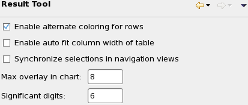

Preference settings for the Integrated Result Tool
The preference settings for the Integrated Result Tool are divided into a set of general settings that affect the entire tool, as well as a number of panels for specialized settings for individual components.
This page describes the general settings. The other available settings are described in:
- Alerts preference settings
- Annotations preference settings
- Bin Wafer Map preference settings
- Device Summary preference settings
- FFC Pareto preference settings
- Histogram preference settings
- HW Bin Summary preference settings
- Parametric Wafer Map preference settings
- Probability preference settings
- Raw Data preference settings
- Shmoo preference settings
- Stream Data preference settings
- SW Bin Summary preference settings
- Test Correlation preference settings
- Test Summary preference settings
- Trend preference settings
- Wafer Summary preference settings
Settings

These settings are available:
- Enable alternate coloring for rows: If this option is active, every other row in the summary and raw data views has a light gray background. If it is off, all rows have white backgrounds.
- Enable autofit column width of table: If this option is active, all columns in a table view (data navigation view or detail data view) that is opened for the first time are made just wide enough for the data they contain. (The result is the same as if the Autofit command had been chosen from the shortcut menu for each column.)
- Synchronize selections in navigation views: If this option is active,
selecting a test in one data navigation view selects in all other
open data navigation views as well. (Views that do not contain the selected test are
unaffected.)
If the option is deactivated, selecting a test in one navigation view does not affect the selection in other navigation views.
- Max overlay in chart: The maximum number of data stores that can be displayed in the same chart (for example, a trend chart or a wafer map).
- Significant Digits: The number of decimal places (after the decimal point) with which numbers are displayed.
Functional changes
- Introduced in SmarTest 7.2.0
- SmarTest 7.2.1: Added Enable autofit column width of table option.
- SmarTest 7.2.1: Renamed some options.